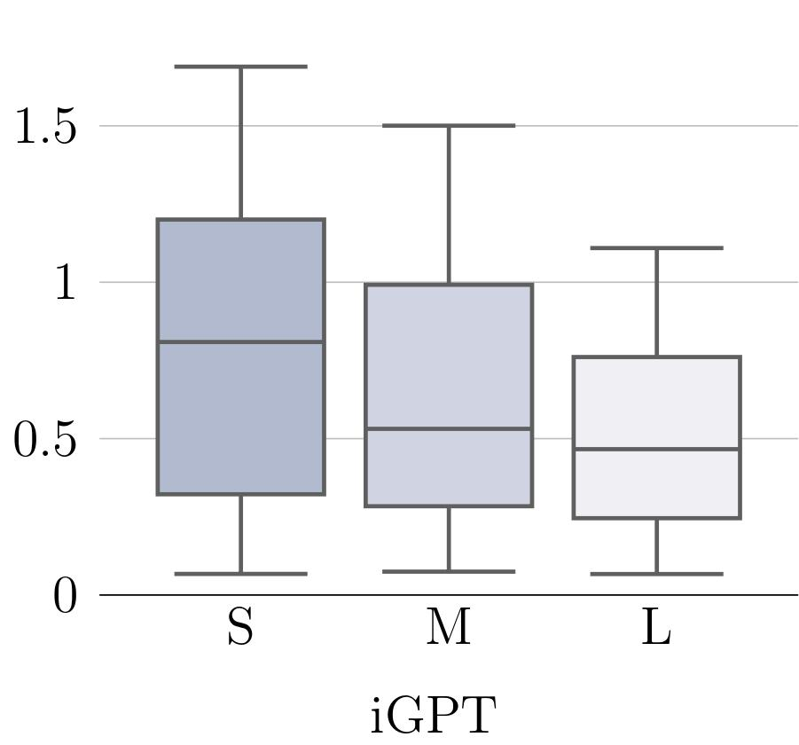
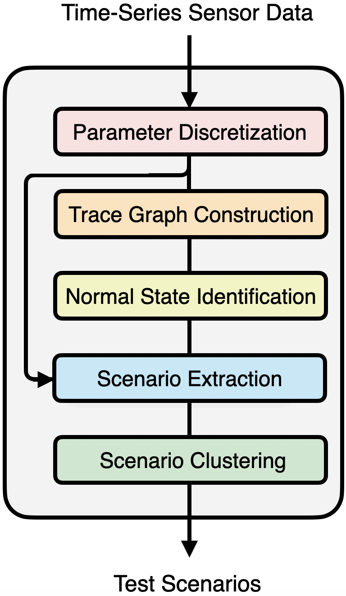

Jannik Brinkmann
I am a PhD Candidate in Computer Science at the University of Mannheim.
Education
since 2022
PhD in Computer Science
University of Mannheim
2021
MSc in Data Science
University of Mannheim
2019
BSc in Computer Science and Management
Baden-Wuerttemberg State University
Publications

A Multidimensional Analysis of Social Biases in Vision Transformers
Jannik Brinkmann, Paul Swoboda, Christian Bartelt
International Conference on Computer Vision (ICCV)
October, 2023
PDF
Poster
Code
BibTeX

Unsupervised Extraction of Test Scenarios from Time-Series Sensor Data using Trace Graphs
Jannik Brinkmann, Noah Metzger, Christian Bartelt
HICSS
To be published in January, 2024